Aesthetics 4.0 ed Estetica 4.0
Progettazione e sviluppo di due siti WordPress con Elementor Pro
Un ecosistema digitale composto da due siti web complementari, progettati per rispondere a obiettivi, contenuti e utenti differenti.
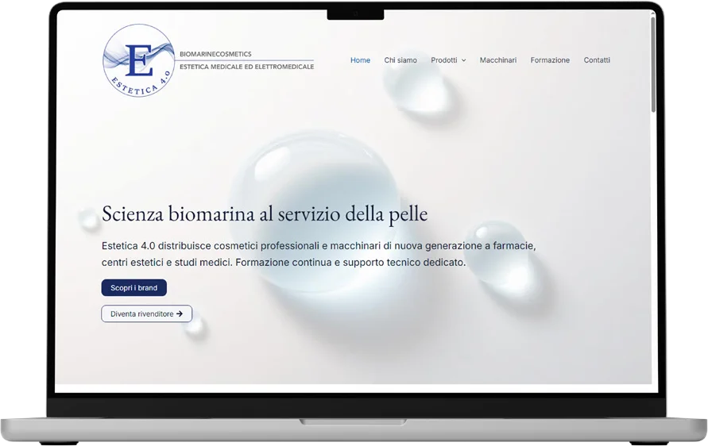
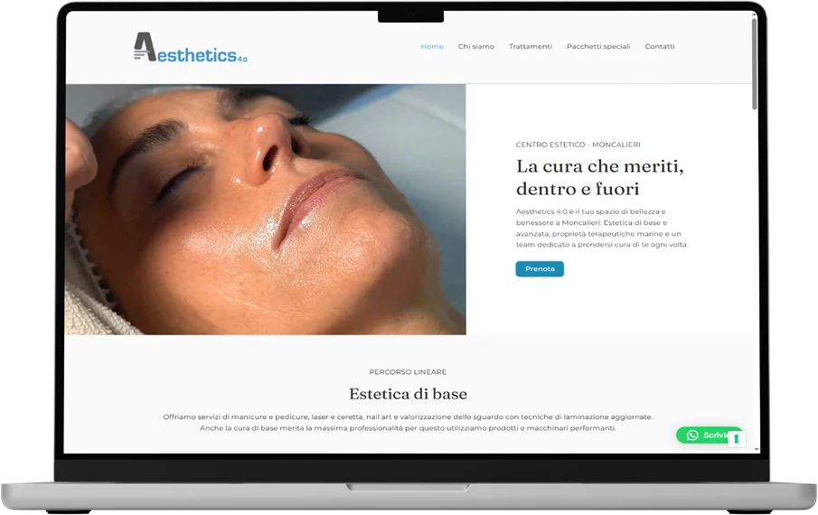
Progetto
Obiettivi
Un ecosistema digitale composto da due siti web complementari, progettati per rispondere a obiettivi, contenuti e utenti differenti.
Il progetto nasce con l’obiettivo di creare un ecosistema digitale composto da due siti web complementari, ciascuno con esigenze e target differenti.
Per Estetica 4.0, l’obiettivo era progettare una piattaforma dedicata alla distribuzione di cosmetici professionali e alla formazione, organizzando un elevato numero di contenuti e facilitando il contatto con farmacie, centri estetici e professionisti del settore.
Per Aesthetics 4.0, il focus era costruire la prima presenza digitale del centro estetico, valorizzandone i servizi e l’offerta di pacchetti e trattamenti attraverso un’esperienza di navigazione chiara e coinvolgente.
Entrambi i siti sono stati progettati su WordPress con Elementor Pro.
Progetto
Mission e vision
Distribuzione professionale
Estetica 4.0
Mission
Distribuire prodotti cosmetici professionali di eccellenza e accompagnare ogni distributore in un percorso di formazione continua, perché la qualità di un trattamento nasce dalla preparazione di chi lo applica.
Vision
Un’estetica professionale dove la scienza biomarina diventa strumento di crescita per chi lavora ogni giorno sulla pelle delle persone. Un futuro in cui farmacie, centri estetici e studi medici parlano lo stesso linguaggio ovvero quello della competenza, della ricerca e della responsabilità.
Centro estetico
Aesthetics 4.0
Mission
Offrire trattamenti estetici professionali e personalizzati, dall’estetica di base a quella più avanzata, in un ambiente accogliente e competente, dove ogni cliente trova il percorso più adatto a sé grazie alla collaborazione con medici, fisioterapisti e nutrizionisti.
Vision
Un centro estetico dove la cura della persona è un atto consapevole, multidisciplinare e senza compromessi. Un luogo in cui bellezza e benessere non sono separati, ma due facce della stessa esperienza.
Progetto
Il mio ruolo
Mi sono occupata dell’intero processo di progettazione e sviluppo dei due siti web, dalla definizione della struttura informativa fino all’implementazione in WordPress.
Nello specifico ho curato:
- ricerca e analisi preliminare
- architettura dell’informazione e sitemap
- progettazione dell’interfaccia utente (UI)
- scelta della palette colori e della tipografia
- organizzazione dei contenuti e copywriting
- sviluppo responsive su WordPress con Elementor Pro
- implementazione di funzionalità personalizzate tramite CSS e JavaScript
- ottimizzazione dell’esperienza di navigazione
Strumenti utilizzati
- WordPress
- Elementor Pro
- Figma
- Adobe Photoshop
- Adobe Illustrator
- WPForms
- HTML e CSS
- Agenti AI
- JavaScript
Nota: i loghi dei due brand erano già stati realizzati prima del mio coinvolgimento nel progetto.
Visual identity
Color palette
Un linguaggio visivo coerente, sviluppato a partire dai loghi esistenti per dare forma all’identità digitale dei due brand.
Per Estetica 4.0, dedicato alla distribuzione di cosmetici professionali e alla formazione, ho scelto una palette composta da blu navy e azzurro ghiaccio, tonalità associate a precisione, ricerca scientifica e competenza nel settore biomedicale. I colori contribuiscono a costruire un’identità autorevole e contemporanea, adatta al dialogo con professionisti come farmacie, centri estetici e studi medici.
Per Aesthetics 4.0, centro estetico specializzato in trattamenti avanzati, ho definito una palette basata su grigio antracite e azzurro elettrico, pensata per unire eleganza, tecnologia e accoglienza. Il contrasto tra tonalità neutre e accenti più vivaci permette di comunicare innovazione mantenendo un’immagine sofisticata e vicina all’esperienza del cliente.
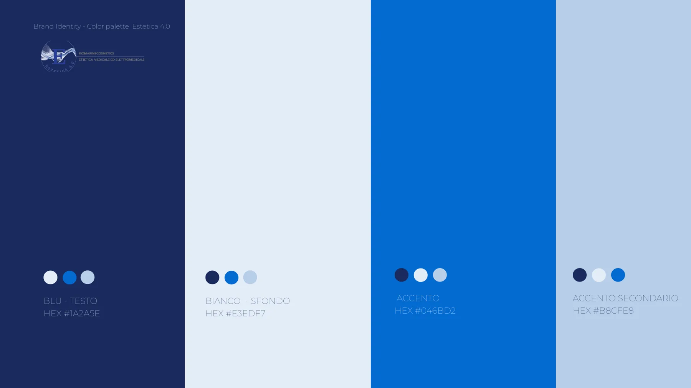
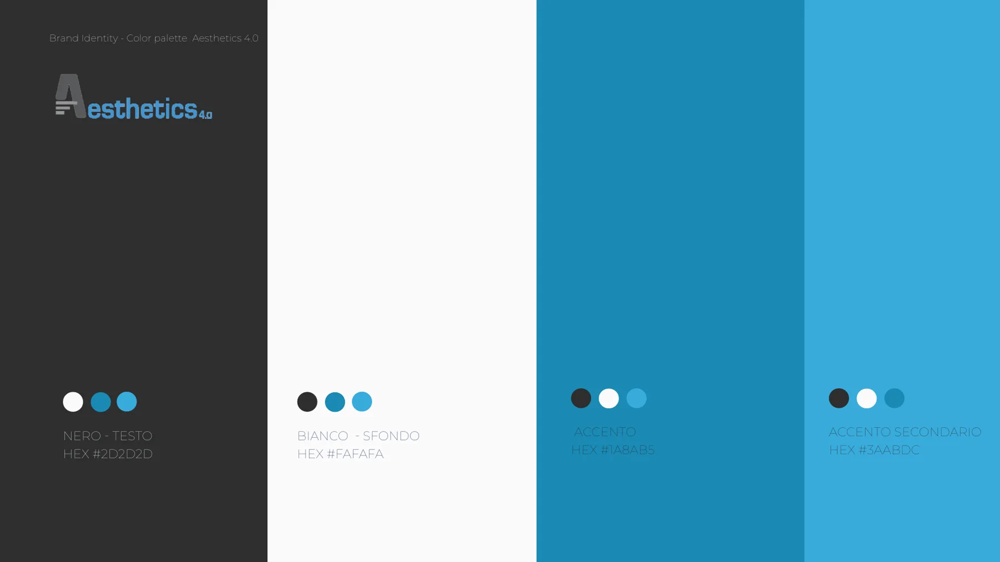
Visual identity
Accessibilità
La definizione delle palette cromatiche ha tenuto conto non solo dell’identità visiva dei due brand, ma anche della leggibilità e dell’accessibilità dei contenuti digitali.
Per entrambi i siti ho utilizzato combinazioni ad alto contrasto tra testo e sfondo, privilegiando colori sufficientemente distinti per garantire una lettura confortevole su desktop e dispositivi mobili.
L’attenzione all’accessibilità ha contribuito a costruire un’interfaccia non solo coerente dal punto di vista estetico, ma anche più efficace e utilizzabile da un pubblico eterogeneo.
Aesthetics 4.0
13.9:1TESTO #2D2D2D
SFONDO #FAFAFA
Estetica 4.0
11.53:1TESTO #1A2A5E
SFONDO #E3EDF7
Visual identity
Tipografia
Per Estetica 4.0 ho scelto l’abbinamento tra Cormorant Garamond e Inter, combinando una serif elegante e istituzionale con una sans serif più funzionale per testi e contenuti informativi. Questa combinazione permette di bilanciare il carattere premium del brand con la necessità di comunicare informazioni tecniche in modo chiaro.
Per Aesthetics 4.0 ho utilizzato Fraunces e Montserrat, un sistema che unisce un elemento più ricercato e contemporaneo a una tipografia essenziale e leggibile. La scelta riflette il posizionamento del centro estetico: un ambiente professionale che integra ricerca, tecnologia e attenzione alla persona.
Estetica 4.0
Aesthetics 4.0
Visual identity
Tone of voice
Il tono della comunicazione è stato definito per trasmettere competenza senza risultare distante, mantenendo un equilibrio tra autorevolezza scientifica e approccio umano.
Per la comunicazione di Estetica 4.0 ho adottato un linguaggio più tecnico e informativo, rivolto principalmente a professionisti del settore. L’obiettivo era comunicare affidabilità, innovazione e valore dei prodotti attraverso contenuti chiari e orientati alla formazione.
Per Aesthetics 4.0 ho utilizzato invece un tono più emozionale e orientato all’esperienza, valorizzando il rapporto con il cliente e accompagnandolo nella scoperta dei trattamenti. Il linguaggio combina professionalità e vicinanza, con l’obiettivo di rendere accessibili servizi specialistici e tecnologie avanzate.
Discovery
Benchmark analysis
Analisi del contesto, organizzazione dei contenuti e definizione dei percorsi di navigazione per supportare le esigenze di clienti finali e professionisti.
Per progettare l’ecosistema digitale di Aesthetics 4.0 ed Estetica 4.0 ho analizzato realtà appartenenti al settore dell’estetica professionale e della cosmetica, con l’obiettivo di individuare modelli di organizzazione dei contenuti, strategie di comunicazione e soluzioni di navigazione efficaci.
L’analisi è stata suddivisa in tre categorie, ciascuna rappresentativa di un diverso approccio progettuale.
Siti vetrina B2C
Per comprendere come presentare servizi e trattamenti in modo chiaro, valorizzando il brand e guidando l’utente verso la richiesta di informazioni o la prenotazione.
- Beauty Inn
- Beaire
- Alfieri6
Siti professionali B2B
Per studiare come organizzare cataloghi, percorsi formativi e contenuti rivolti esclusivamente ai professionisti del settore.
- Alfaparf Milano
- René D’Essay
Siti ibridi
Per comprendere come gestire contemporaneamente clienti finali e partner professionali all’interno dello stesso ecosistema digitale, mantenendo percorsi chiari e differenziati per ciascun target.
- Dermophisiologique
- Eva Nueva
- Revivre
Discovery
Target
Per il sito Estetica 4.0, il target è composto da professionisti del settore estetico interessati alla distribuzione di prodotti cosmetici e tecnologie professionali. In questo caso l’utente non cerca un servizio estetico per sé, ma informazioni utili a valutare una possibile collaborazione commerciale.
Per il sito Aesthetics 4.0, invece, il target principale è rappresentato da persone interessate alla cura del proprio aspetto e al benessere della persona, alla ricerca di trattamenti estetici avanzati e soluzioni personalizzate.
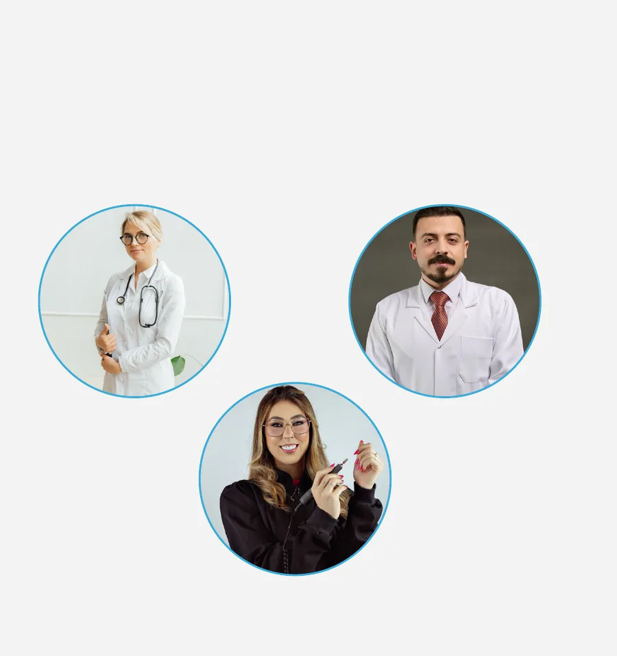
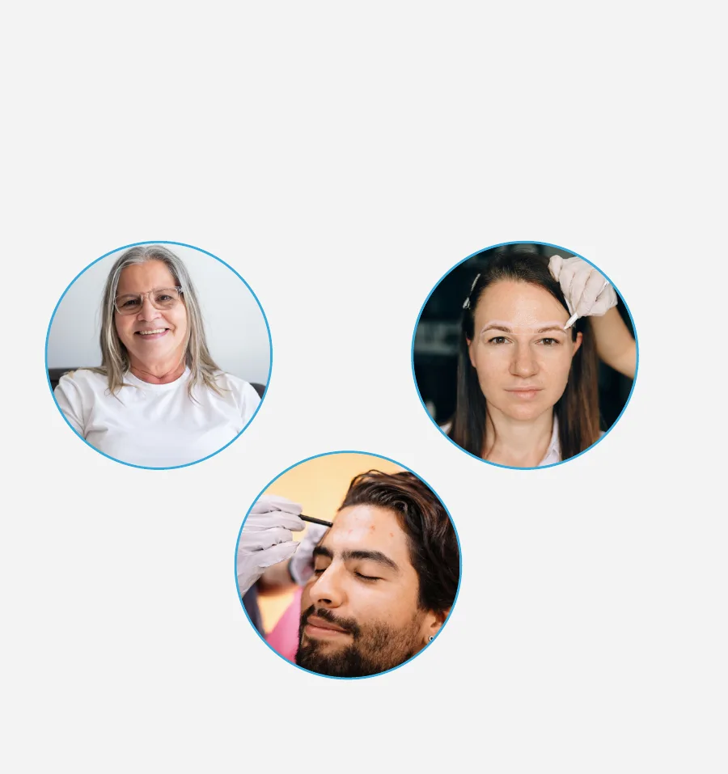
Discovery
User journey
Estetica 4.0
- Scoperta dell’azienda
- Analisi dell’offerta
- Approfondimento dei prodotti e servizi
- Valutazione della collaborazione
- Richiesta di contatto
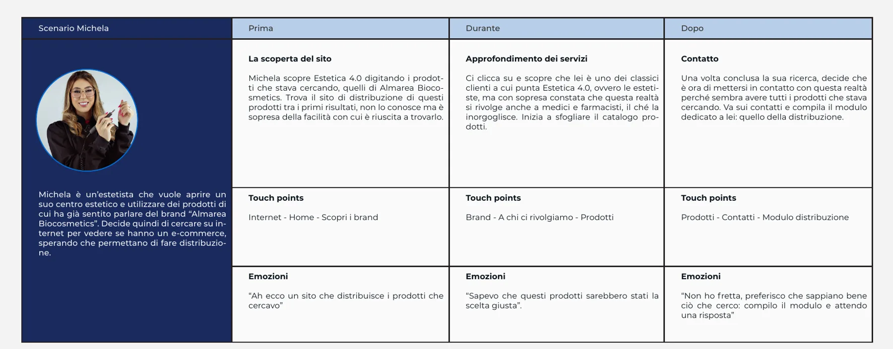
Aesthetics 4.0
- Ricerca di un trattamento
- Scoperta del centro
- Approfondimento dei servizi
- Valutazione della soluzione più adatta
- Contatto / Prenotazione
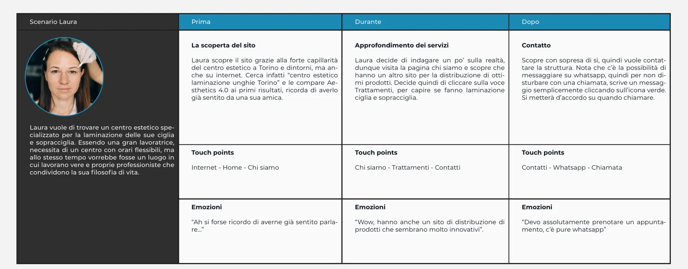
Discovery
Sitemap
La sitemap dei due siti è stata progettata tenendo conto della differenza tra i due target di riferimento e degli obiettivi specifici delle attività.
Per Estetica 4.0 la sitemap è stata sviluppata con un approccio più orientato al pubblico professionale B2B. La struttura del sito è stata pensata per comunicare chiaramente l’offerta e guidare l’utente verso un percorso personalizzato in base al mestiere, quindi se estetista, se farmacista o se medico, e dunque in base alle necessità.
Per il sito Aesthetics 4.0 è stata progettata un’architettura orientata alla conversione, con l’obiettivo di accompagnare l’utente nella scoperta dei trattamenti offerti e facilitare la richiesta di informazioni o la prenotazione di un appuntamento in centro estetico.
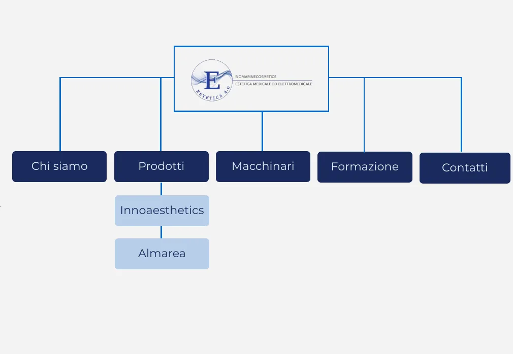
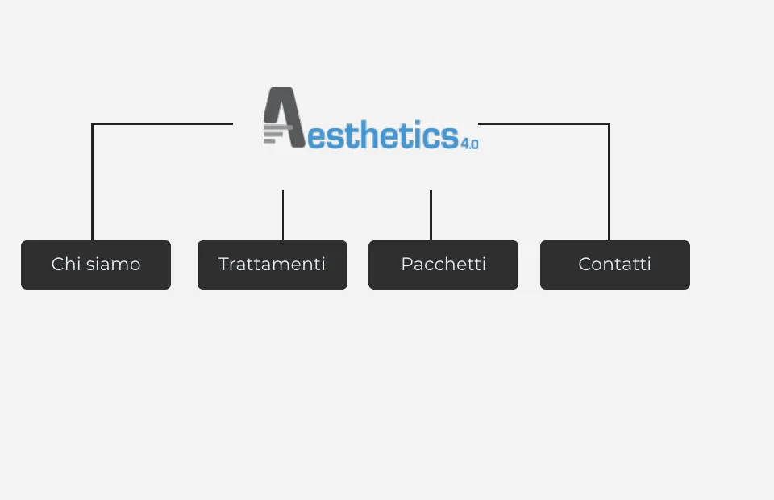
UI Design
Griglia
Griglie, gerarchie visive e componenti modulari progettati per trasformare obiettivi strategici e bisogni degli utenti in un’esperienza digitale chiara, coerente e funzionale.
Per entrambi i siti ho progettato un sistema visivo basato su griglie modulari, componenti riutilizzabili e una gerarchia tipografica coerente, in modo da garantire uniformità tra le diverse pagine e semplificare la futura gestione dei contenuti in WordPress.
L’interfaccia è stata progettata utilizzando un layout modulare responsive basato su Container e Flexbox di Elementor, con una larghezza massima del contenuto di 1250 px per garantire leggibilità e valorizzazione delle immagini sui monitor desktop.
Desktop
12Colonne · Gutter 24 px
Tablet
8Colonne · Gutter 20 px
Mobile
4Colonne · Gutter 16 px
UI Design
Gerarchia visiva
La gerarchia visiva è stata progettata per guidare l’attenzione dell’utente verso le informazioni e le azioni più importanti.
Ho definito un sistema basato su:
- Titoli serif per evidenziare le sezioni principali e rafforzare il posizionamento premium del brand.
- Testi sans serif per garantire leggibilità nei contenuti informativi.
- Contrasti cromatici controllati per mettere in risalto elementi chiave senza compromettere l’eleganza dell’interfaccia.
- Ritmo verticale costante tra heading, paragrafi e componenti interattivi.
L’obiettivo era creare un’esperienza visiva capace di accompagnare l’utente lungo il percorso di navigazione senza sovraccaricare l’interfaccia.
Base Value: 16 · Scale: 1.25
UI Design
Componenti
Per garantire coerenza tra le numerose pagine dei due siti ho progettato un piccolo design system modulare, implementato successivamente in Elementor attraverso Global Colors, Global Fonts e template riutilizzabili.
L’utilizzo di componenti riutilizzabili ha permesso di mantenere coerenza visiva, velocizzare lo sviluppo e facilitare eventuali aggiornamenti futuri.
Estetica 4.0
Componenti principali
- Hero section con titolo, descrizione e CTA primaria
- Card 3 clienti per indirizzare immediatamente l’utente
- Card Brand con immagine, titolo e breve descrizione
- Sezioni informative a due colonne testo + immagine
- Call to action finali con focus sul contatto e sulla richiesta di distribuzione
- Form dinamici su WPForms con contenuti differenziati in base al target
Aesthetics 4.0
Componenti principali
- Hero section con titolo, descrizione e CTA primaria
- Card trattamenti e pacchetti con immagine, titolo e breve descrizione
- Sezioni informative a due colonne testo + immagine
- Banner promozionali per collegare i due siti dell’ecosistema
- Call to action finali con focus sul contatto o sulla scoperta dell’altro sito
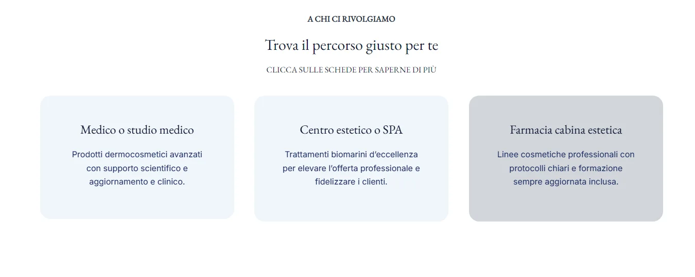
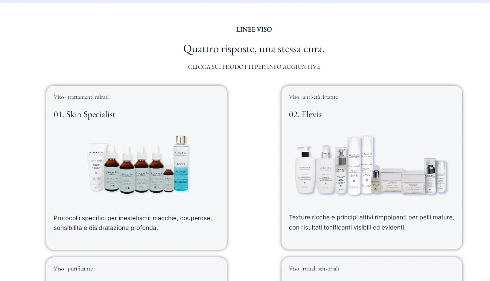
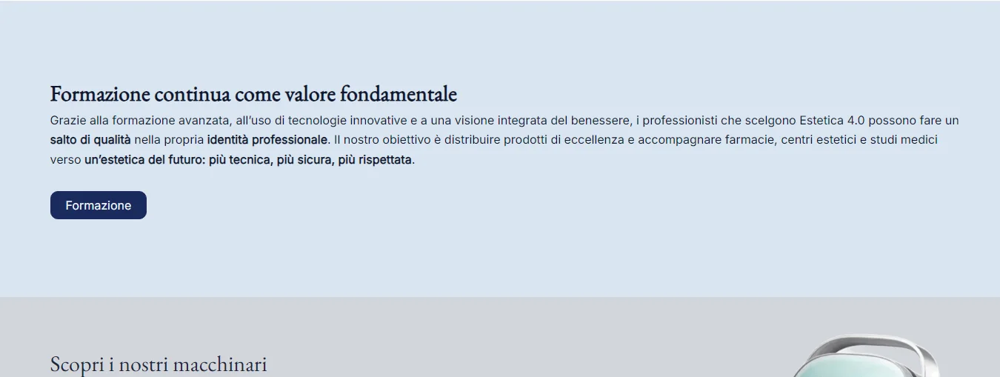
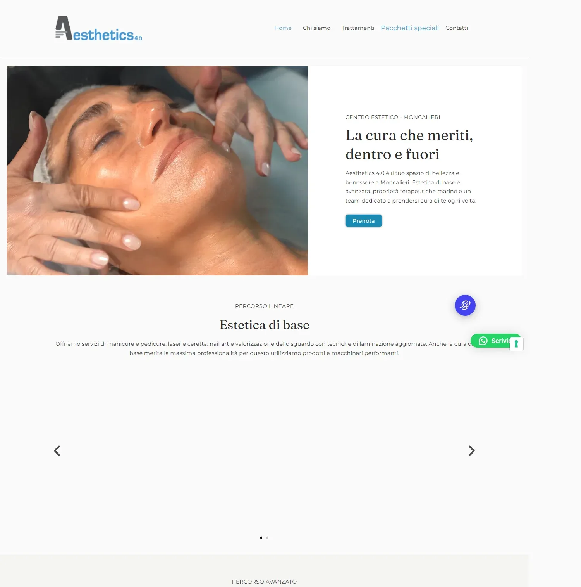
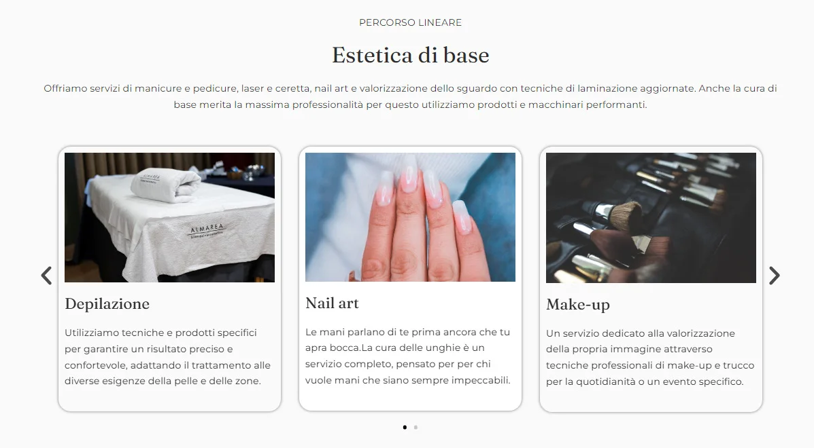
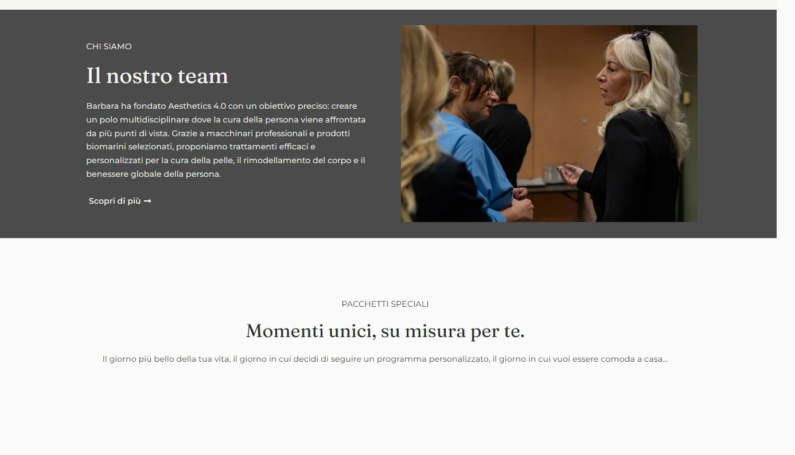
UI Design
Product design
Oltre alle pagine istituzionali e ai percorsi di navigazione, il progetto ha incluso la progettazione di un sistema di presentazione per prodotti cosmetici e macchinari professionali, pensato per il sito Estetica 4.0.
L’obiettivo non era creare un e-commerce tradizionale, ma costruire un’esperienza di consultazione capace di supportare il processo decisionale di un pubblico professionale composto da estetiste, farmacie e operatori del settore medical beauty.
L’assenza dei prezzi è stata una scelta strategica: il focus dell’interfaccia è stato spostato dalla vendita immediata alla valorizzazione delle caratteristiche professionali del prodotto e alla generazione di contatti commerciali qualificati.
Per garantire uniformità e facilità di scansione ho progettato un sistema di card modulari composto da:
- immagine prodotto ad alta leggibilità;
- nome del prodotto o del macchinario;
- breve descrizione funzionale;
- categoria o area di utilizzo;
- call to action per richiedere informazioni o approfondimenti.
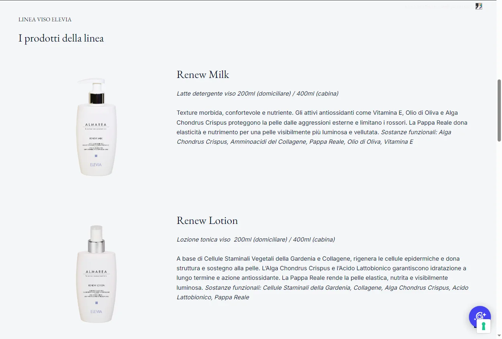
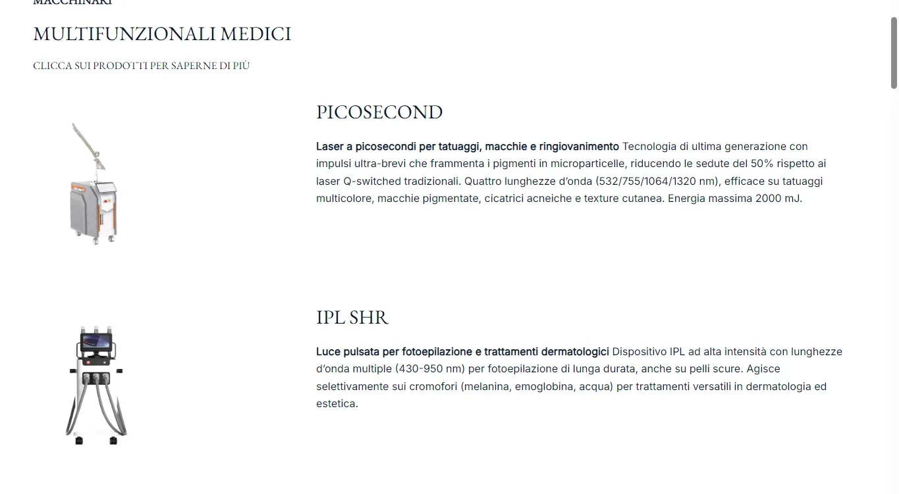
UI Design
Call to action
Le call to action sono state progettate come elementi centrali dell’esperienza utente, con l’obiettivo di guidare sia il cliente finale sia il professionista verso il contatto corretto.
Estetica 4.0
- richiesta distribuzione;
- richiesta formazione;
- informazioni commerciali.
Aesthetics 4.0
- prenotare un appuntamento;
- richiedere informazioni sui trattamenti e pacchetti;
- entrare in contatto con il centro anche tramite la scoperta dell’altro sito.
La distribuzione delle CTA lungo le pagine evita di concentrare la conversione solo nel footer e consente all’utente di agire nel momento in cui raggiunge le informazioni rilevanti.
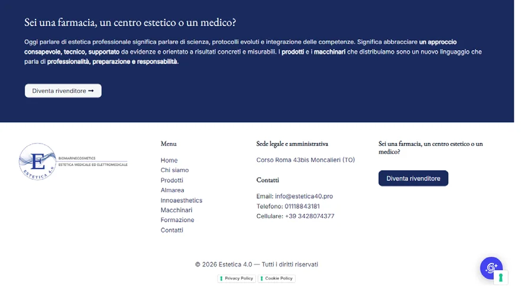
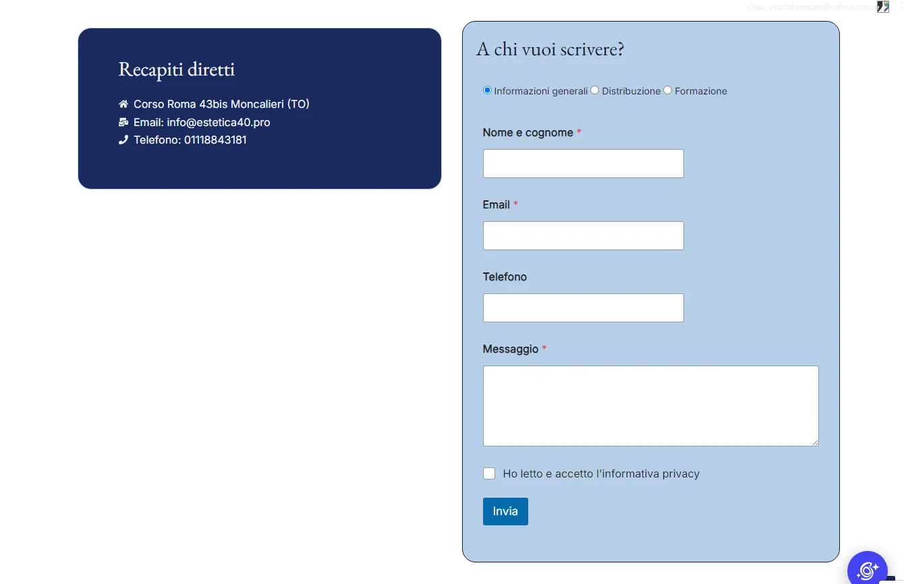
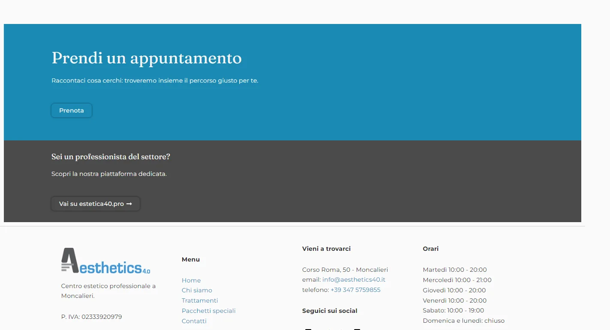
Responsive
Ho reso i due siti navigabili anche da mobile.
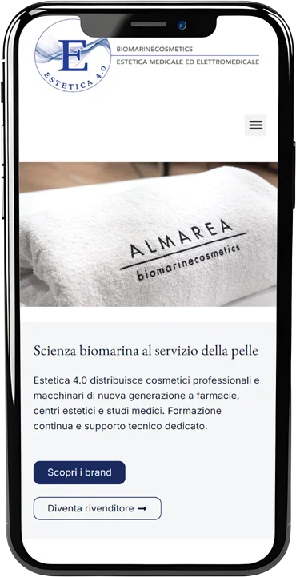
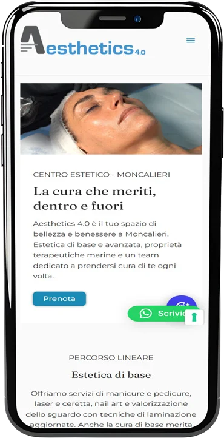
Estetica 4.0
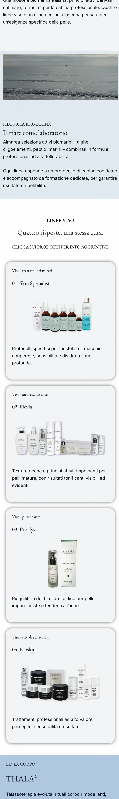
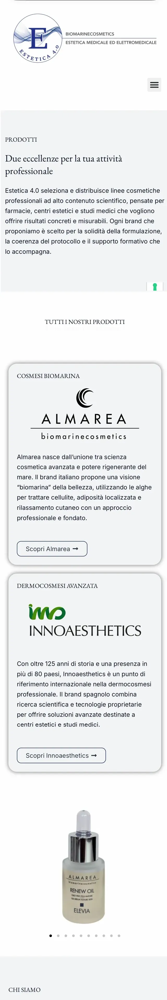
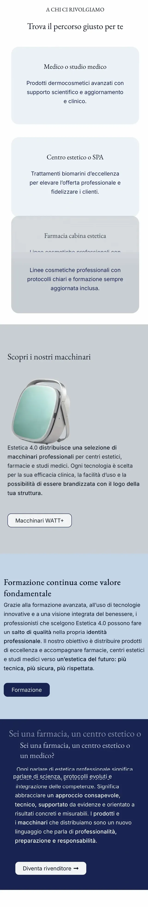
Aesthetics 4.0
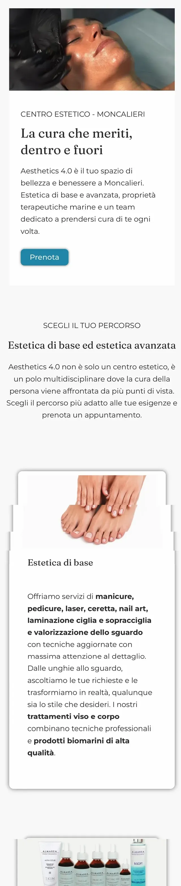
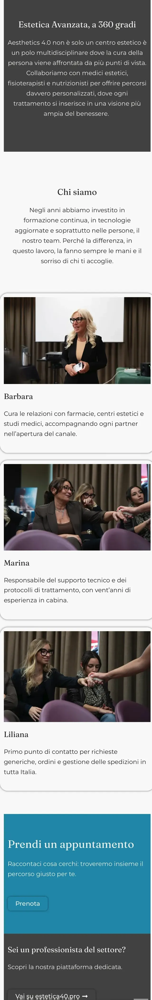
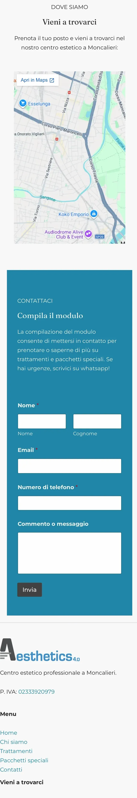